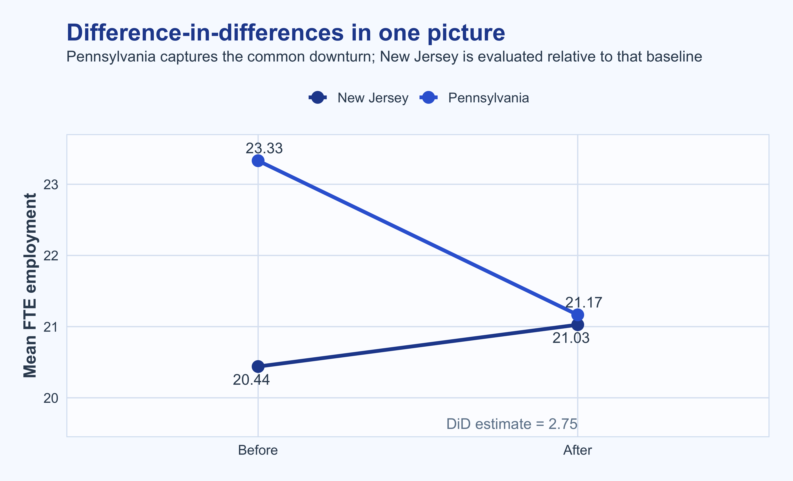
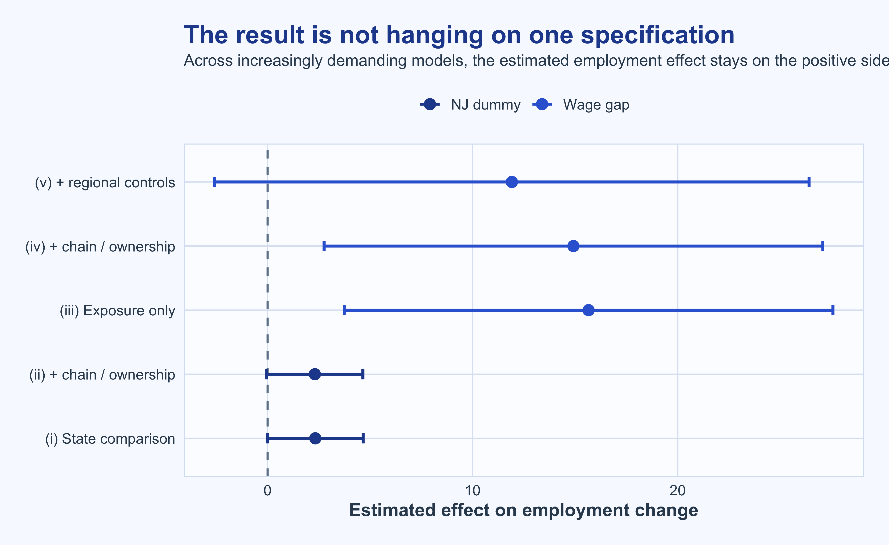
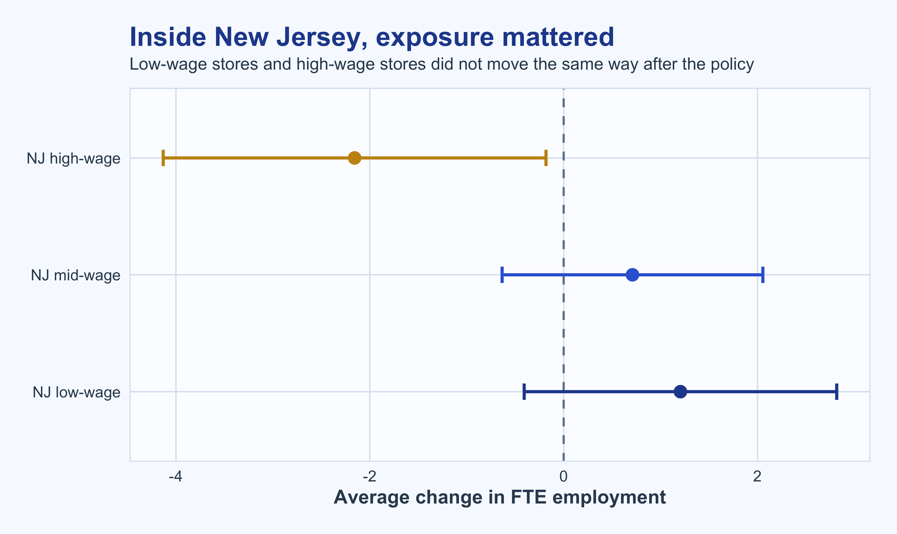

| What the stores looked like before and after the law | |||
| Means in New Jersey and Pennsylvania, with standard errors in parentheses | |||
| Variable | NJ | PA | t |
|---|---|---|---|
| Store mix | |||
| Burger King | 41.1 | 44.3 | -0.5 |
| KFC | 20.5 | 15.2 | 1.2 |
| Roy Rogers | 24.8 | 21.5 | 0.6 |
| Wendy's | 13.6 | 19.0 | -1.1 |
| Company-owned | 34.1 | 35.4 | -0.2 |
| Before the policy | |||
| FTE employment | 20.4 (0.51) |
23.3 (1.35) |
-2.0 |
| Percentage full-time employees | 32.8 (1.33) |
35.0 (2.73) |
-0.7 |
| Starting wage | 4.6 (0.02) |
4.6 (0.04) |
-0.4 |
| Wage = $4.25 (percentage) | 32.2 (2.64) |
34.2 (5.48) |
-0.3 |
| Price of full meal | 3.4 (0.04) |
3.0 (0.07) |
4.0 |
| Hours open (weekday) | 14.4 (0.15) |
14.5 (0.33) |
-0.3 |
| Recruiting bonus | 23.6 (2.34) |
29.1 (5.14) |
-1.0 |
| After the policy | |||
| FTE employment | 21.0 (0.52) |
21.2 (0.94) |
-0.1 |
| Percentage full-time employees | 35.9 (1.38) |
30.4 (2.81) |
1.8 |
| Starting wage | 5.1 (0.01) |
4.6 (0.04) |
10.8 |
| Wage = $4.25 (percentage) | 0.0 (0.00) |
28.2 (5.38) |
-5.2 |
| Wage = $5.05 (percentage) | 89.0 (1.76) |
1.4 (1.41) |
38.9 |
| Price of full meal | 3.4 (0.04) |
3.0 (0.07) |
5.1 |
| Hours open (weekday) | 14.4 (0.15) |
14.7 (0.33) |
-0.6 |
| Special hiring program | 20.3 (2.27) |
23.4 (4.85) |
-0.6 |
What Happened When New Jersey Raised the Minimum Wage?
Reading Card and Krueger (1994) as a study in identification, not just a surprising result
This is one of the most assigned papers in applied microeconomics. But the real reason it still matters is not the headline result. It is the way the paper builds credibility, one comparison at a time.
What this post tries to show
- why the New Jersey–Pennsylvania comparison is plausible
- what the difference-in-differences estimate is actually subtracting out
- why the paper’s stronger checks make the result more credible
Why this paper still matters
Card and Krueger’s paper is often remembered for one claim: a higher minimum wage did not seem to reduce fast-food employment. That is the sentence everyone quotes.
But stopping there misses the interesting part.
The paper is valuable because it shows what empirical credibility looks like when the treatment is not randomly assigned. New Jersey raised its minimum wage in April 1992, from $4.25 to $5.05. Nearby Pennsylvania did not. That policy contrast created a setting in which the authors could compare employment changes across places that were geographically close and economically linked. More importantly, they did not treat that contrast as automatically convincing. They kept asking whether the comparison held up under tighter tests.
That is what makes the paper worth revisiting. It is not just a famous result. It is a useful example of how to reason about causal identification.
The setup in one clean equation
The data contain two survey waves for fast-food restaurants in New Jersey and eastern Pennsylvania. Employment is measured in full-time equivalents, or FTEs:
\[ \text{FTE employment} = \text{full-time employees} + 0.5 \times \text{part-time employees} + \text{managers}. \]
The outcome of interest is the change in employment from the first wave to the second:
\[ \Delta E_i = E_{i,2} - E_{i,1}. \]
The core design then asks a simple question:
Did employment change more in New Jersey than in Pennsylvania after New Jersey’s minimum wage increase?
That is the entire logic of difference-in-differences in this paper.
What has to be true before the design is believable
Before thinking about regression, two basic checks matter.
First, the comparison group has to be reasonably credible. New Jersey and Pennsylvania stores do not need to be identical, but they should look similar enough that their short-run employment movements can be meaningfully compared.
Second, the treatment has to be real. If New Jersey restaurants were already paying wages above the new minimum, then the law would not bind and there would be little reason to expect an employment response at all.
Those checks are not secondary. They are the foundation.
Three details matter here.
The first is that the two states look close enough on several pre-policy margins to make the comparison intelligible. Store mix is not identical, but it is not wildly different either. Starting wages are nearly the same before the law. Weekday operating hours are also close. None of that proves parallel trends, but it makes the comparison more defensible.
The second is that the policy clearly bites. After the law, starting wages jump in New Jersey and barely move in Pennsylvania. The share of New Jersey stores paying exactly $5.05 also shoots up. That is crucial. A policy cannot affect behavior through wages unless it actually forces wages up.
The third is more subtle: the paper does not begin with an identification claim. It begins with legibility. That is good empirical style. Before asking whether the policy changed employment, the authors first show that it changed wages.
The nine numbers that make the method click
Difference-in-differences sounds abstract when introduced as notation. In practice, the idea is very concrete. We only need four averages and two changes.
| The nine numbers behind the design | |||
| Average FTE employment before and after the policy change | |||
| What is being compared? | New Jersey | Pennsylvania | NJ - PA |
|---|---|---|---|
| Average FTE employment before the policy | 20.44 | 23.33 | -2.89 |
| Average FTE employment after the policy | 21.03 | 21.17 | -0.14 |
| Change in average FTE employment | 0.59 | -2.17 | 2.75 |
Read the table row by row.
If we only looked at New Jersey, we would conclude that employment rose slightly. But that would be incomplete, because Pennsylvania was not flat over the same period. Employment there fell. Difference-in-differences uses that Pennsylvania decline as the baseline for the broader environment and asks whether New Jersey moved differently relative to it.
So the design is not saying, “employment increased in New Jersey.” It is saying, “employment in New Jersey changed more favorably than we would have expected given what happened in a nearby untreated comparison group.”
That is a much more careful claim.

The figure helps for one reason: it makes the counterfactual visible. The downward movement in Pennsylvania is doing real work. It is the piece that keeps the analysis from collapsing into a naive before-after comparison.
Why the regression table is not the source of causality
A lot of students learn this paper and come away thinking Table 4 is where causality appears. That is backwards.
The causal leverage is already in the design. The role of the regression table is to test whether the design-driven result looks fragile or stable once the comparison is made tougher.
| How the result holds up under tougher models | |||||
| Five reduced-form models for change in employment | |||||
| Model ingredient | (i) | (ii) | (iii) | (iv) | (v) |
|---|---|---|---|---|---|
| New Jersey dummy | 2.33 (1.19) |
2.30 (1.20) |
|||
| Initial wage gap | 15.65 (6.08) |
14.92 (6.21) |
11.91 (7.39) |
||
| Chain and ownership controls | no | yes | no | yes | yes |
| Regional controls | no | no | no | no | yes |
| Residual standard error | 8.79 | 8.78 | 8.76 | 8.76 | 8.74 |
| Joint p-value for added controls | 0.34 | 0.44 | 0.21 | ||
There are two parts of this table that matter.
The first is the boring but reassuring one: adding chain and ownership controls barely changes the New Jersey coefficient. That tells us the basic comparison is not being driven by an obvious compositional story like one state having more company-owned stores or more restaurants from a particular chain.
The second is the more important move. The later columns stop using a simple New Jersey dummy and instead use a wage-gap measure. That variable captures how strongly each store was exposed to the law based on its initial wage. A store already paying relatively high wages should have little gap. A store starting far below $5.05 should have a large one.
That shift is conceptually valuable because it makes the test more demanding. The question is no longer just whether treated places differ from untreated places. It becomes whether more exposed stores show systematically different employment changes than less exposed stores.
That is much closer to the actual mechanism.

What I like about this figure is not that every interval is tight. They are not. What matters is that the paper keeps moving in the right direction methodologically: from a broad treatment-control contrast toward more granular exposure-based reasoning.
The smartest check in the paper happens inside New Jersey
This is the part I think people remember less than they should.
The paper does not rely only on Pennsylvania as a comparison group. It also asks whether New Jersey stores behaved differently depending on how exposed they were to the new minimum wage.
That internal comparison is powerful because it addresses a natural worry: what if New Jersey and Pennsylvania were simply on different employment paths for reasons unrelated to the wage law?
Inside New Jersey, that interstate story cannot do the same work. Stores that were already paying high wages should have been less affected by the policy. Stores starting near $4.25 should have been much more exposed. If those groups move differently, the interpretation becomes more convincing.

This graph is easy to misread, so it helps to be precise.
The fact that the high-wage group has a negative mean change does not mean the paper has suddenly found a collapse in some employment rate. It simply means average FTE employment fell between the two survey waves for stores that were already paying relatively high starting wages.
That is exactly why the comparison is informative. Those stores were the least exposed to the new law. If they look more like the untreated Pennsylvania group, while low-wage New Jersey stores look different, the internal logic of the paper gets stronger.
In other words, the paper is not betting everything on one external control group. It is checking whether the mechanism shows up where it should.
What the paper does not prove
This is also worth saying clearly.
The paper does not prove that minimum wages can never reduce employment. It does not identify a universal law. It studies one policy episode in one industry, in one region, over a short horizon.
That is not a weakness. It is what credible empirical work looks like. Good papers usually answer a narrower question than people later attribute to them.
A better reading is this: in the setting the authors study, the data do not support the simple competitive prediction that a higher minimum wage mechanically reduced fast-food employment. And the reason that conclusion is persuasive is not a single table. It is the accumulation of descriptive checks, cross-state comparisons, within-state exposure contrasts, and robustness exercises.
What I take away from this paper
What stays with me is less the headline and more the discipline of the design.
The paper first shows that the treatment really changed wages. Then it shows the comparison group is at least plausible. Then it gives the core difference-in-differences comparison in its simplest form. Then it asks whether that story survives when the model is tightened and when exposure is measured more directly.
That ordering matters.
The lesson is not that “regression proves causality.” The lesson is that good empirical work makes its identifying logic visible, then keeps stress-testing it. This paper is still useful because it teaches that habit extremely well.